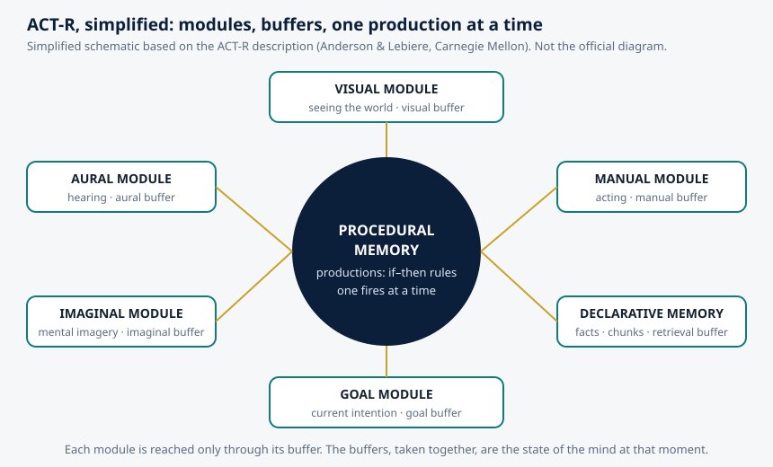
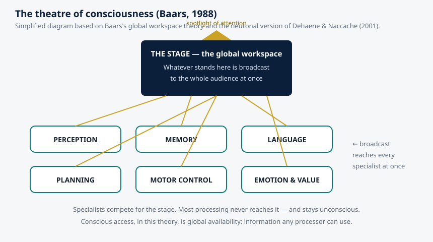
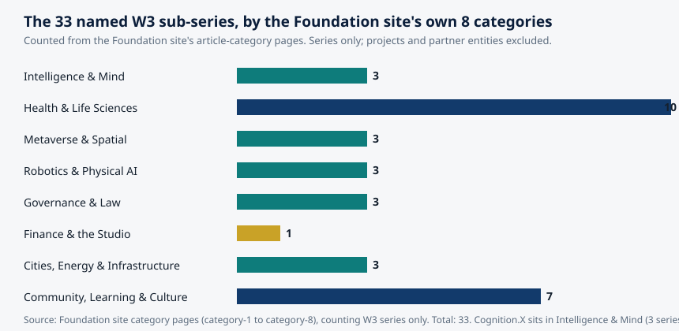

Article 49 · Cognition.X · AGI Future Foundation
How Minds Are Built: Cognitive Architectures, from ACT-R and Soar to the Global Workspace
The first article in this series introduced Cognition.X itself — a proposed learning series, its Flow Zone direction, and its anchored campus at 45.483, 18.572.
Cognition.X · Intelligence & Mind · AGI Future Foundation
Illustration (generated image): a mind drawn as a blueprint of connected modules. Not a photograph, not a screenshot of any real system, and not a picture of a real person.
What is true, and what is not yet true
The first article in this series introduced Cognition.X itself — a proposed learning series, its Flow Zone direction, and its anchored campus at 45.483, 18.572. The second, on metacognition, examined the mind’s ability to watch itself. This article asks a different question: not what a mind does, but what a mind is made of. What are the parts, how do they fit together, and what would you have to build if you wanted to make something that thinks the way a person thinks?
That question has a name in cognitive science. A cognitive architecture is a proposal for the fixed structure of a mind: the parts that do not change from task to task, and the rules by which those parts work together. It is the difference between a theory of how people solve one kind of puzzle and a theory of how people solve puzzles at all. This article explains the three most influential architectures — ACT-R, Soar, and global workspace theory — what each one claims, where they disagree, and what they imply for the machines we are now building.
Here is what is true. ACT-R, Soar, and global workspace theory are real research programmes with decades of published work, named founders, working software, and experimental tests. The descriptions in this article come from those programmes’ own publications and from sources actually read while writing it, listed at the end.
Here is what is not yet true. Cognition.X has no verified team, no architecture of its own, no product, and no learner. Nothing in this article describes a system the Foundation has built, and nothing in it should be read as a claim that any existing AI system implements any of these architectures. The architectures are the science. The series is still a plan.
1. Why one theory instead of a thousand
Modern psychology has a problem that is easy to miss from outside the field: it has too many theories, and each one explains too little. There is a theory of how people remember lists, a theory of how they parse sentences, a theory of how they solve algebra problems — and the theories do not talk to each other. The science accumulates explanations the way a drawer accumulates spare parts: each one works, none of them fits together, and nobody can say what the whole machine looks like.
Allen Newell, one of the founders of artificial intelligence and cognitive science, made this complaint famous in 1973 in a paper whose title is still quoted half a century later: “You Can’t Play 20 Questions with Nature and Win.” His argument was that psychology was asking nature one small question at a time, getting one small answer at a time, and never assembling the answers into a single account of the mind. The remedy he proposed was the unified theory of cognition: a single theory, stated precisely enough to be run as a computer program, that could perform the full range of human cognitive tasks within one fixed structure.
A cognitive architecture is what a unified theory looks like when you build it. It is a specification of the machinery that all tasks run on: the kinds of memory the mind has, the way knowledge is stored, the way attention selects, the way learning changes the machinery itself. If the architecture is right, then a model of algebra problem-solving and a model of driving a car should be built from the same parts and obey the same limits. If they are not built from the same parts, then at least one of them is wrong.
There is a second reason architectures matter now, and it has nothing to do with psychology. The agentic systems being built today — systems that plan, use tools, remember conversations, and act over long periods — are, whether their builders use the word or not, cognitive architectures. They have memories, attention mechanisms, goals, and learning rules, and the choices made about those parts determine what the system can and cannot do.
2. ACT-R: the mind as a set of modules
The most widely used cognitive architecture in cognitive science is ACT-R, short for Adaptive Control of Thought—Rational. It was developed principally by John Robert Anderson and Christian Lebiere at Carnegie Mellon University, and Anderson’s own description of the project is disarmingly plain: the goal is to understand the structure of higher-level cognition, and the theory takes the form of a computer simulation capable of performing — and learning from — the same tasks that human subjects perform in the laboratory.
ACT-R’s most important assumption is that human knowledge comes in two irreducible kinds. Declarative knowledge is knowledge of facts: that Washington, D.C. is the capital of the United States, that France is a country in Europe, that two plus three is five. In ACT-R, declarative knowledge is stored as chunks — small bundles of properties, each accessible through a labelled slot. Procedural knowledge is knowledge of how to do things: how to type the letter Q, how to drive, how to perform addition. Procedural knowledge is stored as productions — if–then rules that say, in effect, if the mind is in this state, then do that.
The architecture organises those two kinds of knowledge into modules, each a specialised and largely independent structure, roughly corresponding to a brain system. The most developed are the visual module, the manual module, the declarative memory module, and the goal module, which keeps track of current goals and intentions. Later versions added an aural module and an imaginal module. Each module is reached only through a buffer, a small holding area containing the module’s current contents. The contents of all the buffers, taken together, are the state of the mind at that moment.
Cognition, in ACT-R, unfolds as a succession of production firings. At each moment, a pattern matcher searches for a production whose conditions match the current contents of the buffers. Only one production can fire at a time. When it fires, it can change the buffers — retrieving a fact, shifting visual attention, issuing a motor command — and thereby change the state of the system, which makes a new production eligible to fire. Thinking is a sequence of these small steps, each one taking roughly fifty milliseconds, each one predicting how long a person should take and how likely they are to be right. That is what makes ACT-R testable in a way that a verbal theory is not: you run the model, and it tells you, in milliseconds and error rates, what a person should do.

Diagram (simplified illustration based on the ACT-R description, Anderson & Lebiere, Carnegie Mellon): modules around a central production system, each reached through its buffer. Not the official ACT-R diagram.
The “R” in ACT-R stands for Rational. Anderson’s rational analysis holds that cognition is optimally adapted to the statistical structure of the environment. A chunk’s activation reflects how likely it is to be needed: frequently and recently used facts are easier to retrieve, because in a world where the past predicts the future, that is the rational way to organise memory. Forgetting, in this view, is not a defect. It is a feature.
ACT-R’s reach is unusually broad. Models built in ACT-R have been used in more than 700 scientific publications: memory effects like the fan effect and primacy and recency; attention and control in the Stroop task and task switching; language parsing and acquisition; complex problem-solving including the Tower of Hanoi and algebra; driving and flying; and, increasingly, patterns of brain activation measured with fMRI. Its most visible application is in education: cognitive tutors built on ACT-R model the student and personalise instruction — and the Cognitive Tutor for mathematics derived from this work has been used in thousands of schools across the United States.
3. Soar: the mind as a problem space
If ACT-R is the architecture of memory and skill, Soar is the architecture of problem-solving. Soar was created by John Laird, Allen Newell, and Paul Rosenbloom at Carnegie Mellon University, beginning with Laird’s doctoral thesis in 1983, and it is now maintained by Laird’s research group at the University of Michigan. Its goal, in the project’s own words, is to develop the fixed computational building blocks necessary for general intelligent agents — agents that can perform a wide range of tasks and encode, use, and learn all types of knowledge to realise the full range of cognitive capabilities found in humans.
Soar rests on a single sweeping hypothesis, which Newell set out in his 1990 book Unified Theories of Cognition: the problem space hypothesis. It holds that all goal-oriented behaviour can be understood as search through a space of possible states, attempting to reach a goal. A problem is a starting state, a goal state, and a set of operators that move between states. Thinking is navigating that space. That idea descends from one of the first AI systems ever built, the Logic Theorist of 1955, in which Newell, Herbert Simon, and Cliff Shaw showed that a machine could prove theorems by searching through a space of possible proof steps.
Soar’s most distinctive mechanism is what happens when the search gets stuck. When the architecture cannot decide what to do next, it reaches an impasse. Rather than failing, Soar creates a substate: a new problem space, nested inside the current one, whose goal is to resolve the impasse. The system works in the substate until it finds a way forward, and then it returns. And here is the elegant part: the resolution is remembered. Soar’s learning mechanism, called chunking, automatically compiles the work done in the substate into a new production rule, so that the next time the same situation arises, the system does not need to search at all. Deliberation becomes habit.
That is a recognisable description of human learning. The first time you solve a kind of problem, you think it through step by step and it takes a long time. The tenth time, you see the answer. Soar says that is not a metaphor. It is the same mechanism: impasse, subgoaling, chunking, and the gradual replacement of search by rules.
ACT-R and Soar share a great deal: both are production systems, both descend from Newell, and both aim at a unified theory. They differ in emphasis. ACT-R is more constrained by experimental data from psychology and neuroscience; its parameters are set by fitting human reaction times and error rates, and its modules are mapped, where possible, onto brain regions. Soar is more oriented toward artificial intelligence applications; it is built to be an agent that acts in the world, and its learning mechanism is more automatic and more ambitious. The two are sometimes described as rivals, but that is the wrong word. They are two answers to the same question, and the fact that they agree as much as they do — that both converge on productions, on goals, on the conversion of deliberation into skill — is itself evidence about what a mind must contain.
4. The global workspace: the mind as a theatre
The third architecture in this article is different in kind from the first two. ACT-R and Soar are architectures in the engineering sense: they are programs you can run. Global workspace theory is an architecture in the conceptual sense: it is a proposal about the organisation of consciousness, and about why some information is available to the whole mind while most of it is not.
The theory was proposed by Bernard Baars in 1988, and its central image is a theatre. Consciousness, Baars argued, works like a stage. At any moment, the stage holds one integrated scene — the contents of awareness — lit by a spotlight of attention. Around the stage sits an audience of specialist processors: perception, memory, language, planning, motor control, emotion. Each specialist works unconsciously, in parallel, on its own task. When a specialist’s information wins the competition for the stage, it is broadcast to the whole audience at once, and every specialist can use it. That broadcast, in the theory, is what consciousness is: not a place in the brain, but the fact of global availability.
The neuronal version of the theory, developed by Stanislas Dehaene, Jean-Pierre Changeux, and Lionel Naccache, gives the theatre a neural address. Conscious access occurs when incoming information triggers a non-linear ignition: a self-sustaining, brain-wide state of activity in prefrontal and parietal regions connected by long-distance axons. Unconscious processing is early, localised, and brief. Conscious processing is late, sustained, and distributed, with a characteristic signature around 300 milliseconds after the stimulus. The transition is all-or-none: information either ignites and becomes globally available, or it does not.

Diagram (simplified illustration based on Baars, 1988, and Dehaene & Naccache, 2001): the stage broadcasts to the whole audience of specialists. Not an official diagram.
Global workspace theory is careful about what it does and does not explain, and the care matters. It addresses access consciousness — the availability of information for report, reasoning, and behavioural control — rather than phenomenal consciousness, the felt quality of experience. It does not claim to explain why seeing red feels like anything. It claims to explain why the information that you are seeing red is available to your memory, your language, and your plans, while the vast majority of the information your brain processes never becomes available to any of them. That is a smaller claim than a theory of consciousness, and it is testable, because it predicts specific neural signatures: late sustained activity and widespread prefrontal-parietal activation.
The theory also has a direct implication for the design of artificial minds. If consciousness, in the functional sense, is global availability, then an artificial system that wants to reason flexibly needs something like a workspace: a shared channel through which its specialist components can exchange information, and a competition mechanism that decides what gets broadcast. Many modern AI systems have something that looks like this — an attention mechanism, a shared context, a scratchpad — but few were designed with the workspace in mind. The theory is a reminder that the bottleneck in a mind is not how much its specialists can compute. It is how they share what they compute.
5. Where the architectures disagree — and what the disagreement means
The oldest disagreement is between the symbolic and the connectionist views of the mind. ACT-R and Soar are, at their core, symbolic systems: their entities — chunks and productions — are discrete, and their operations work on the structure of representations rather than their meaning. Connectionist systems store knowledge in the strengths of connections between simple units. For decades the two camps argued about which was right. The honest current position is that both are partly right. ACT-R itself is now described as a hybrid: its symbolic productions carry quantitative properties — activation levels, utilities, noise — that behave like connectionist quantities. The debate has not been resolved so much as absorbed: the question is no longer which side wins, but which level of description fits which phenomenon.
A second disagreement concerns how much of the mind is fixed and how much is learned. Soar bets heavily on learning: a small fixed architecture plus chunking, a universal learning mechanism that builds the rest. ACT-R bets more on structure: a richer set of modules and parameters, fitted to human data, with learning as the tuning of activations and the compilation of new productions. Neither bet is obviously wrong, and the difference shows up in what each architecture is good for: Soar for agents that must learn continuously in open environments, ACT-R for precise predictions about human performance on specific tasks.
A third disagreement is about consciousness itself. Global workspace theory puts conscious access at the centre: the workspace is the organising principle, and everything else is arranged around it. ACT-R and Soar have no explicit theory of consciousness. They model the processes that, in a human, are accompanied by consciousness, but they do not say which of those processes are conscious or why. That is a gap, not a refutation — but it matters for anyone who wants to build a machine and claim it understands what it is doing. An architecture without an account of access cannot say what its system can report, what it can reason about, or what it cannot notice about itself.
The table below summarises the three architectures side by side. It is a simplification, and every cell could be argued about — but the shape of the comparison is the point.
| ACT-R | Soar | Global workspace | |
|---|---|---|---|
| Created by | John Anderson & Christian Lebiere, Carnegie Mellon | John Laird, Allen Newell & Paul Rosenbloom, Carnegie Mellon; now University of Michigan | Bernard Baars (1988); neuronal version by Dehaene, Changeux & Naccache |
| Core idea | Modules + buffers + productions; one production fires at a time | All behaviour is search in a problem space; impasses create substates; chunking converts deliberation into rules | Consciousness is global broadcast: information on the stage is available to all specialists |
| Knowledge | Declarative chunks and procedural productions | Productions in long-term memory; episodic and semantic memory added later | Specialist processors, unconscious until broadcast |
| Learning | Activation tuning; production compilation | Chunking — automatic, universal | Not a learning theory; a theory of access |
| Best for | Predicting human reaction times, errors, and brain activity; cognitive tutors | Real-time agents that learn continuously | Explaining conscious access and its neural signatures |
| Status | Active; version 7.31 (2025); 700+ publications | Active; maintained at the University of Michigan | Active; a leading empirical theory of consciousness |
6. What modern AI has — and what it is missing
It is tempting to map them directly onto the large language models that dominate current AI. A language model has something like a memory, something like attention, and something that looks like reasoning. The mapping is tempting and it is mostly wrong, and the ways in which it is wrong are exactly what cognitive architectures are good for seeing.
A language model, as trained, has no modules in ACT-R’s sense. It has no declarative memory that stores facts as retrievable chunks, no goal module that maintains a stable representation of what it is trying to do, and no production system in which one rule fires at a time. What it has is a single, vast, undifferentiated network, trained to predict the next token, with a context window that serves — inadequately — as working memory, attention, and goal store all at once.
That is not a criticism of language models. It is a description of what they are, and it explains both their strengths and their characteristic failures. They are fluent because prediction is a powerful mechanism. They hallucinate because there is no module whose job is to check a retrieved fact against a source. They lose track of long tasks because there is no goal module holding the intention stable. They are poorly calibrated — a subject covered in the companion article on metacognition — because there is no meta-level whose job is to monitor the object-level and report on it.
But there is a warning in the convergence, too. A system assembled from spare parts — a retriever here, a planner there, a reflection prompt somewhere else — is not an architecture. An architecture is a theory: a claim about which parts exist, what each one does, and how they interact, stated precisely enough to be tested and to fail.
7. A short timeline
The architectures in this article were not built in a day. The Logic Theorist appeared in 1955; Newell called for unified theories in 1973; Soar 1 was built as Laird’s thesis in 1983; Baars proposed the global workspace in 1988; Newell’s Unified Theories of Cognition and the Nelson–Narens metacognition framework both appeared in 1990; ACT-R 4.0 followed in 1993; the global neuronal workspace hypothesis arrived in 1998, with its empirical framework in 2001; Anderson’s integrated theory of ACT-R was published in 2004; Laird’s Soar book in 2012; Dunlosky’s review of learning techniques in 2013; and ACT-R 7.31 in 2025. The field moves slowly, and that is a strength: an architecture that survives forty years of testing has earned its place in a way that a system announced last quarter has not.
8. Where Cognition.X sits — and what this would mean for it
Cognition.X is one of 33 named W3 sub-series, and it is the only one in its category whose subject is the mind itself. Intelligence & Mind is the smallest category, with three series: Cognition.X (learning), Empathic.X (understanding others), and InfoGurus (finding and checking what is known). The size is not a ranking. It is a statement about what the category is: capacities, not industries.

Chart: the 33 named W3 sub-series grouped by the Foundation site’s own 8 article categories, counted from the site’s category pages. Series only; projects and partner entities are excluded. Data source: Foundation site category pages (category-1 to category-8). Total: 33.
What would the architecture literature mean for a proposed series like Cognition.X, if it is ever built? Four implications follow directly from the research above, and all four are design questions, not product claims.
First, a learning system needs an architecture, not a pile of features. A tutor that retrieves, plans, explains, and tests is a system with parts, and the parts need defined jobs and a defined way of resolving disagreements between them. The studio model the Foundation plans for its series already names eight agent roles — research synthesis, task routing, proposal drafting, coordination, progress tracking, monitoring, collaborator scouting, and grant drafting — but roles are not an architecture. An architecture would say what each role can read, what it can write, and how the system learns from its own errors. Without that, the roles are a job list, not a mind.
Second, the system needs a goal module. The most common failure of long-running agentic systems is not that they make mistakes; it is that they drift. ACT-R’s goal module and Soar’s problem spaces are both answers to that problem: the goal is a first-class object, represented and inspectable — not a sentence buried in a prompt. A learning series that cannot hold a learner’s goal stable across a session cannot teach.
Third, the system needs a workspace. A tutor that cannot make its reasoning available to its own checking mechanisms will present confident errors as facts. Global workspace theory is a theory of human consciousness, not a software design pattern, and this article does not claim otherwise. But the functional point survives: a system needs a shared channel, and a competition for that channel, so that its best-supported claims win and its unsupported ones lose.
Fourth, the system needs to learn the way Soar learns, not the way a database grows. Adding more facts to a store is not learning. Learning, in the architectures above, is the conversion of deliberation into skill: the slow, effortful solution of a problem becoming a fast, automatic rule. A Cognition.X system that merely accumulates content is a library. A system that gets faster and more reliable the more it teaches is a learner.
None of those four things exists for Cognition.X today. There is no verified architecture, no team, no Steward Council, no curriculum, and no learner. The campus at 45.483, 18.572 is an anchored fabric whose assets are not yet hosted, so it does not render fully. The Foundation’s own governance pages are explicit that agents prepare and humans decide. A series that took cognitive architecture seriously would take that boundary seriously, because the boundary is itself an architectural claim: about which parts of the system are allowed to decide, and which are only allowed to propose.
Frequently asked questions
Is a cognitive architecture the same as an AI model?
No. An AI model is a trained system that performs a task. A cognitive architecture is a theory of the fixed structure of a mind, stated precisely enough to run as a program. A model can be built inside an architecture, but the architecture is the machinery the models run on, not any one model.
Do ACT-R and Soar still matter now that language models exist?
They matter more, not less. Language models are powerful and architecturally undifferentiated: one mechanism doing many jobs. The architectures describe what a mind needs in the way of parts — memory, goals, attention, learning — and the failures of current systems map closely onto the parts they lack.
Does global workspace theory say machines are conscious?
No. It is a theory of conscious access in humans. It does not claim that any machine is conscious, and it addresses access consciousness rather than the felt quality of experience. Its value for AI is functional: it describes what a system needs if its parts are to share information effectively.
Which architecture should Cognition.X use?
That question has no answer yet, because Cognition.X has no team, no Steward Council, and no design document. A future design would need to choose — or to justify not choosing — and the choice would need to be written down, with reasons, by named humans. An architecture is a commitment, and a series that will not commit to one has not yet designed anything.
Glossary
- Cognitive architecture — a proposal for the fixed structure of a mind: its parts, their jobs, and their rules of interaction, stated precisely enough to run as a program.
- Unified theory of cognition — Allen Newell’s proposal (1973, 1990) that psychology should aim for one theory covering all of cognition.
- ACT-R — Adaptive Control of Thought—Rational; the architecture of John Anderson and Christian Lebiere (Carnegie Mellon). Declarative chunks, procedural productions, modules reached through buffers.
- Chunk — in ACT-R, a unit of declarative knowledge: a bundle of properties in labelled slots.
- Production — in ACT-R and Soar, an if–then rule: if the mind is in this state, do that.
- Buffer — in ACT-R, the holding area through which a module is reached; the contents of all buffers together are the state of the mind.
- Soar — the architecture of Laird, Newell, and Rosenbloom; all behaviour as search in a problem space, with impasses, substates, and chunking.
- Chunking — in Soar, the automatic compilation of work done in a substate into a new production rule, so deliberation becomes skill.
- Global workspace theory — Baars (1988): consciousness as global broadcast. Neuronal version: Dehaene, Changeux, and Naccache.
- Cognition.X — W3 Series 1 in the April 2026 internal list; proposed, not formed, funded, or offered. Published direction: Flow Zone education. Anchored campus at 45.483, 18.572.
References
- Newell, A. (1973). You can’t play 20 questions with nature and win. In W. G. Chase (Ed.), Visual Information Processing. Academic Press.
- Newell, A. (1990). Unified Theories of Cognition. Harvard University Press.
- Anderson, J. R., Bothell, D., Byrne, M. D., Douglass, S., Lebiere, C., & Qin, Y. (2004). An integrated theory of the mind. Psychological Review, 111(4), 1036–1060.
- ACT-R — overview, modules, buffers, productions, applications, history. https://en.wikipedia.org/wiki/ACT-R
- ACT-R software, Carnegie Mellon University (ACT-R 7, version 7.31). http://act-r.psy.cmu.edu/ACT/software
- John R. Anderson, Carnegie Mellon University — research description and ACT-R. https://www.cmu.edu/dietrich/psychology/directory/core-training-faculty/anderson-john.html
- Laird, J. E. (2012). The Soar Cognitive Architecture. MIT Press.
- Soar (cognitive architecture) — history, problem space hypothesis, impasses, chunking. https://en.wikipedia.org/wiki/Soar_(cognitive_architecture)
- Baars, B. J. (1988). A Cognitive Theory of Consciousness. Cambridge University Press.
- Dehaene, S., & Naccache, L. (2001). Towards a cognitive neuroscience of consciousness. Cognition, 79(1–2), 1–37.
- Mashour, G. A., Roelfsema, P., Changeux, J.-P., & Dehaene, S. (2020). Conscious processing and the global neuronal workspace hypothesis. Neuron, 105(5), 776–798. https://www.cell.com/neuron/fulltext/S0896-6273(20)30052-0
- AGI Future Foundation. Cognition.X (Article 01): Learning, Understanding, and the Flow Zone. https://www.agifuturefoundation.org/articles/article-01-cognition-x.html
- AGI Future Foundation. Intelligence & Mind — article category (three series: Cognition.X, Empathic.X, InfoGurus). https://www.agifuturefoundation.org/articles/category-1-intelligence-mind.html
- AGI Future Foundation. The W3 Series — all 33 series. https://www.agifuturefoundation.org/series/index.html
AGI Future Foundation PBC — a California Nonprofit Public Benefit Corporation, Entity No. B20260196664, Articles filed 2026-04-24. No IRS 501(c)(3) determination letter is on file; donations are not claimed to be tax-deductible. Cognition.X is a proposed W3 series, not formed, funded, or offered. Nothing on this page is legal, tax, or financial advice. Questions: x@agifuturefoundation.org.